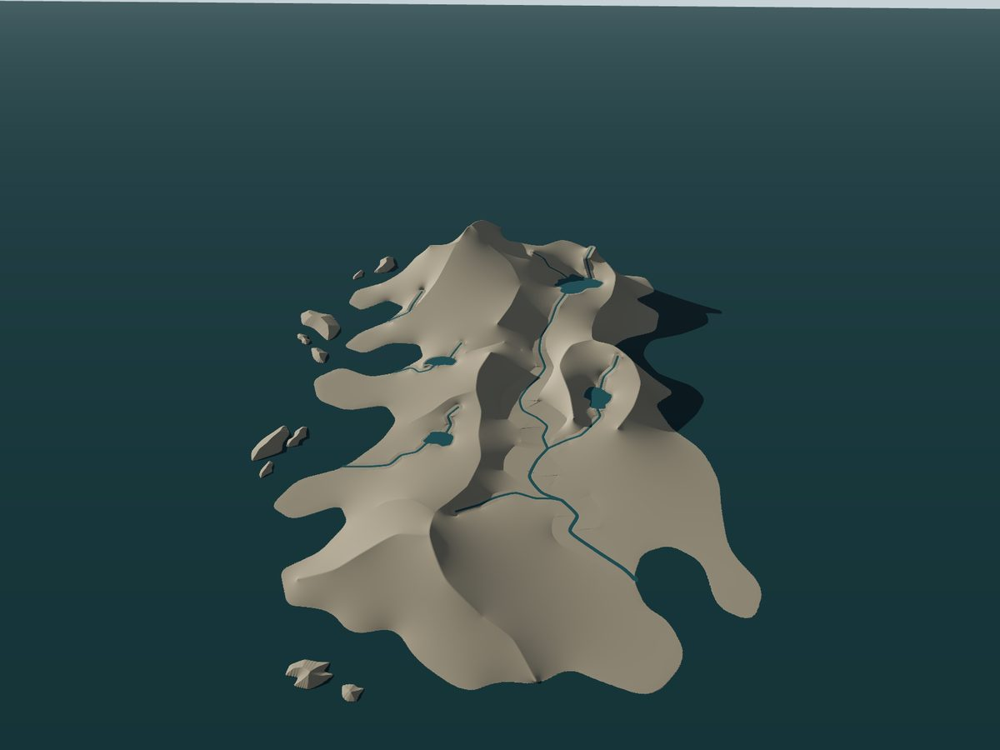
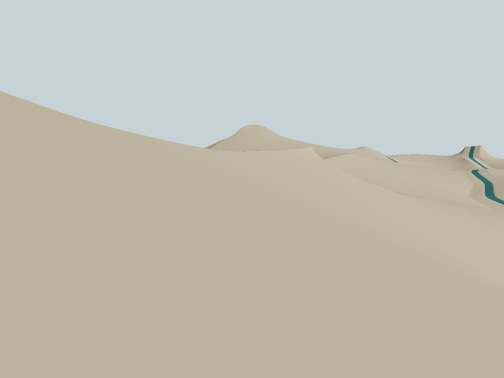
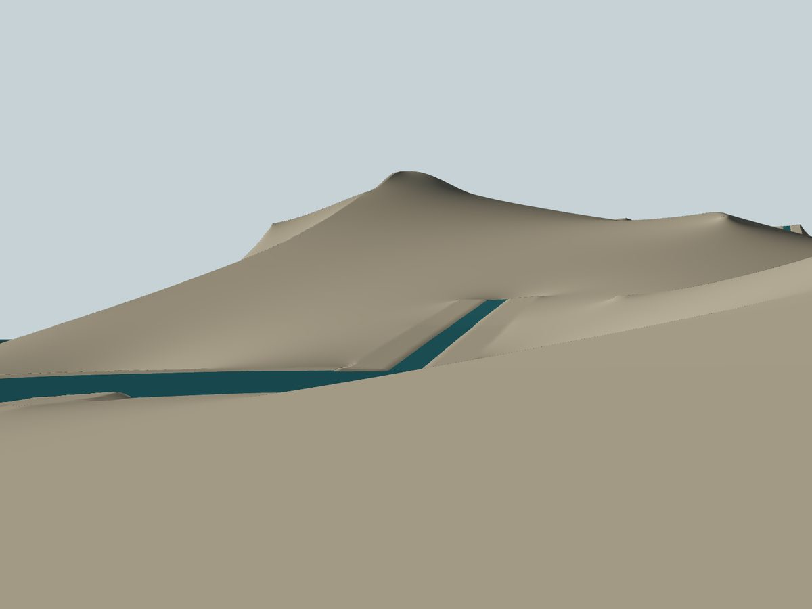
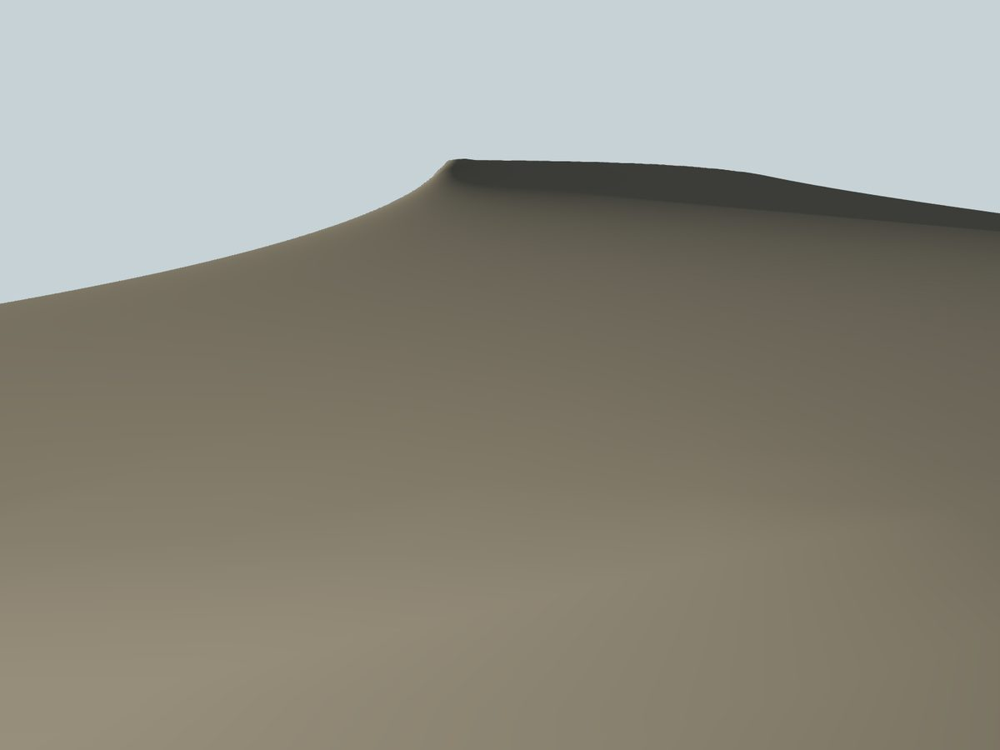
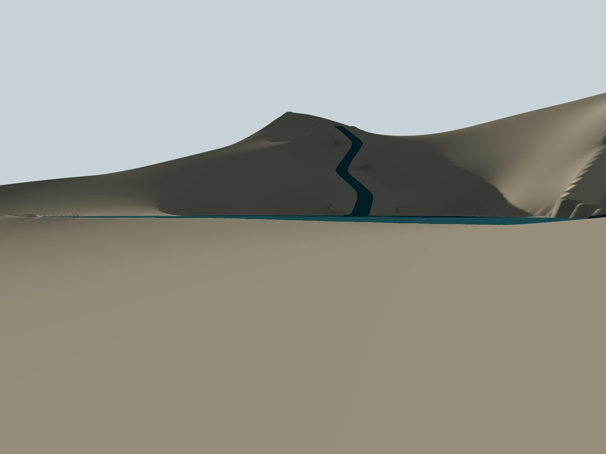
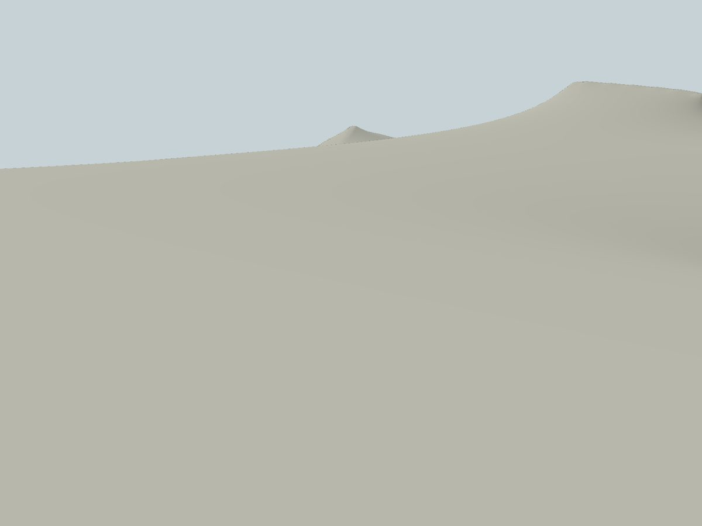
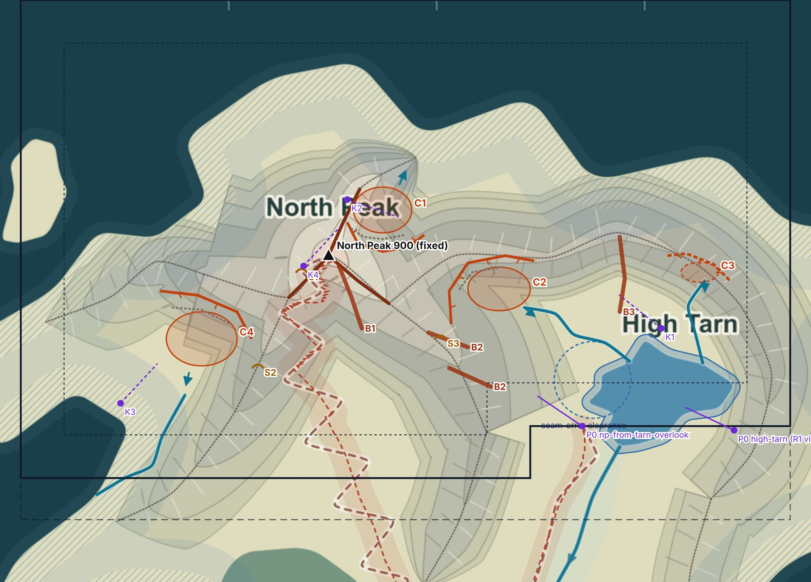

SUPERSEDED: A1-D proposal v0 as reviewed on 22 Oct 2026, preserved unchanged for traceability. Several v0 statements were corrected in v1 (see ../README.md, section "Corrections to v0"). The current dossier is ../review.html.
The clay renders show North Peak as a soft dome on a tent-shaped massif. This proposal sharpens the three authored crests that meet at the summit into arêtes, cuts four cirques between them that step down towards High Tarn and the sea, and replaces the broad engineered inlet benches with natural V-gullies. The summit, crests, water and trails stay where they are.
feature/geo-r02c-p0-calibration-infra
Six commits on R1 checkpoint b6784a9. No commit was created for the push, and nothing was force-pushed, merged or deployed.
git diff b6784a9 HEAD is empty over R1 binaries, R1 source, the design master and existing tests.codex/geo-r02b-a-r1-terrain-skeleton = b6784a9, main = d543f66. Both are unchanged after the push.| Commit | Content |
|---|---|
| 38e99fe | Reference-environment and R1 reproduction tools |
| 4172c03 | Diagnostics, A1 window mask v1, invariance tool |
| 2e21ea5 | Clay review mode, fixed review cameras, P0 tests |
| 860c80d | Convergence and cross-platform reproducibility reports |
| 92290a0 | Platform probe, default-viewer comparison, gallery tools |
| 90d0cb7 | 69 captures, README, review gallery |
P0 gallery: docs/geo-r02c-p0/review.html on the branch (browse on GitHub). GitHub shows it as source. To view it, check out the branch and open the file in a browser, or open the PNGs under captures/standard, captures/clayA and captures/clayB. The live clay mode is ?review=clay&sun=A (or B) with &presets=p0. The bundle fallback (geo-r02c-p0.bundle) is no longer needed.
All six frames are R1 as committed, captured by the P0 tools: clay albedo, fixed cameras, sun A = az 290° / el 18° or sun B = az 135° / el 35°. They are the problem statement for A1-D. recorded in P0






Diagnosis: R1's harmonic solve produces the smoothest surface that satisfies its constraints, which is exactly what makes these forms look anonymous. Crests become creases, the slopes between them become minimal surfaces, and channel sections become flat benches. A1 has to add authored concavity and sharpness: cirques, arêtes and gullies. A solver alone will not produce them.
One idea: North Peak becomes a three-arm horn, and the cirques between its arms form a staircase that steps down to High Tarn. The arms are the authored crests that meet at the summit: n-crown to the north, and n-main to the west and to the south-east. Their positions stay fixed. Only their cross-section is sharpened, and they are never lowered. Four cirques, each graded to an existing authored outlet, give every approach a different face:

Coordinates are world metres (x east, z north). Heights are the R1 values where they meet frozen terrain. design target All ranges are envelopes for A1 to realise and validate, not generator settings.
| Id | Form | Where | Target | Why |
|---|---|---|---|---|
| Horn | North Peak summit | (−520, 2770) | 900 m fixed. The summit block narrows to a point where three arêtes meet, with cirque headwalls on three sides. | A recognisable silhouette from every quadrant |
| A1 | n-crown arête (N) | → (−370, 3090) | Authored crest 900 → 820 → 620 kept. Sharpened so the crest band is ≤ 2–3 cells (8–12 m) wide, with the C1 headwall on its east side. | Divides the sea face from Nordbotn |
| A2 | n-main SE arête | → (−230, 2540) | 900 → 730 kept. Steeper on the C2/C1 side, with the B1 pillar below it to the south-west. | The gable edge seen from Birchwood and the south |
| A3 | n-main W arête | → (−710, 2570) | 900 → 740 kept. The C4 bowl lies to its south-west. | The second gable edge |
| C1 | Nordbotn: N cirque hanging above the sea face | floor (−260, 2990) ~280 × 220 m | Floor 690–715 m, graded to the lip at (−180, 3110) to (−150, 3175), so it does not overdeepen. Headwall relief 60–210 m. Lip ≥ 300 m from the coast. Max lowering 58 m. | Carves the R1 plateau at 700–760 m into a hanging bowl; seen from the sea and from K2/K4 |
| C2 | Västra tarnbotn: W tarn cirque | floor (300, 2610) ~300 × 210 m | Floor 617–624 m, lip = the authored tarn-inlet-w source at 618 m. Headwall 40–110 m on the north side, rising to 280 m under the summit arm. | Gives the inlet a real head; the first step of the staircase seen from High Tarn |
| C3 | Norra tarnbotn (option) | floor (1265, 2690) ~180 × 100 m | Floor 645–650 m, lip = the authored source at 637 m. Relief 15–35 m, possible only if the n-east-arc divide is raised to about 660–680 m (§9). | Fixes a source that currently sits on a knoll |
| C4 | Vindbotn: shallow SW corrie | floor (−1130, 2370) ~340 × 260 m | Floor 410–440 m, lip at about 410 m at (−1190, 2210), then a rock chute down to the windward-gully head. Relief 180–330 m. Crest kept at R1. | Character for the west and windward-coast views |
| B1 | South pillar | (−470, 2720) → (−360, 2420) | A convex rib standing 15–40 m proud of the flank, ≥ 75 m from the peak-ascent centreline. | An east wall for the summit climb, giving enclosure and scale |
| B2 | SE-arm east ribs (×2) | (−40, 2400)…(260, 2140) | Two parallel ribs, 10–25 m relief, with gullies between them. | Breaks up the SE membrane flank seen from the Cairn col |
| B3 | Tarnryggen divide rib | (880, 2860) → (880, 2500) | A raised rib separating C2 from C3, 10–30 m. | Reads the staircase as separate steps from the tarn |
| S1–S3 | Shoulders | S1 (−650, 2700) S2 (−860, 2240) S3 (20, 2380) | Local slope flattening: S1 ≤ 12° (keep walkable, on the trail), S2 and S3 as stepped knolls. | Rest points and secondary landmarks |
| G1–G3 | V-gullies: tarn-inlet-w, tarn-inlet-n, windward-gully | authored channels | Bed and level fixed. A ±4–6 m bench, walls about 36°, cut 10–15 m into a reconstructed hillslope. They replace R1's ±55 m flat graded bench. | Removes the engineered ribbons |
| — | Couloirs and talus | see map | Couloirs as narrow notches (4–8 m) in the headwalls of C1 and C2. Talus as concave aprons at about 30–34° at the foot of each headwall. | Transition from headwall to floor; carries texture later |
Slope envelope on a 4 m heightfield. Vertical cliffs are impossible, because a single cell rise of 4 m equals 45°. Targets: headwalls 35–50°, with local bands up to about 55° over ≤ 3 cells; arête flanks 30–45°; talus 30–34°; cirque floors 2–8°, always falling toward the lip. Sharper rock faces would need meshes or a later detail pass. That choice is D4.
Grey is the measured R1 section. Dashed orange is the hand-drawn design target. Targets meet R1 exactly at both ends and at every fixed crest or frozen point. Vertical exaggeration is shown per panel. design target These are intentions, not solver output.
T1: The sea face stays at R1 for the first 250 m of the section (frozen band plus taper). Nordbotn is cut up to 58 m into the R1 plateau, and its floor rises from the 690 m lip to 715 m at the headwall foot, so it always drains. The SE arête keeps its authored height. The south face steepens slightly into a concave footslope. No raises.
T2: The headwall under the summit arm drops to a floor that falls 6 m to the lip, at the authored source of 618 m. Below the lip, the R1 ramp becomes a step–bench–step riegel sequence down to the tarn side. Max lowering 30 m, max raise 15 m.
G1: R1's ±55 m flat bench is replaced with a V-section. The bed stays exactly at its R1 level, a narrow ±6 m bench keeps the walking and channel tests valid, and walls of about 36° meet the hillslope reconstructed across the old bench. Max lowering 1 m, max raise 13 m. The gully mostly fills in the bench edges rather than digging.
T4: The crest is held at its R1 value. Vindbotn is a shallow bowl with a lip at about 410 m, followed by a rock chute toward the windward-gully head. Max lowering 66 m, max raise 42 m. This is the largest edit in the proposal.
T5 (option A only): The n-east-arc divide is raised from about 624 m to about 668 m along about 150 m. That gives the inlet-n source at 637 m a small floor and a headwall behind it. The north face stays frozen in the coastal band. Max raise 50 m, no lowering. Without option A, this section stays at R1 apart from the gully.
The skyline changes from one convex arc to a gable: the A2 and A3 arêtes rising to a point. On the climb, the B1 pillar stands as a wall to the right (east), and S1 is a flat rest step just before the summit, where Nordbotn suddenly opens to the north-east (camera K4). Today's evidence: valley shoulder, sun B.
A distinct horn above Vindbotn. Under sun A, the C4 bowl reads as a recessed shadow beneath the A3 arête, and the S2 knoll gives a mid-ground step. Today: one rounded hump.
A cirque staircase. C2's lip at 618 m, then gully steps down to the 360 m tarn, with the B3 rib separating C2 from the small C3 head, if approved. The inlets arrive as V-gullies with white-water steps rather than flat ribbons. Today: engineered benches.
Nordbotn as a hanging cirque: a bowl at about 700 m that ends abruptly at a lip above the frozen 700 m sea face. The A1 arête frames it on the west. This is the "wonder" view, and also the one most dependent on a later coastal-cliff pass (D6).
The summit stays hidden: the authored n-main SE crest blocks it and A1 must not lower crests. A1 adds the B2 ribs and their gullies to the near flank, so the view gains structure even without the peak. Where the summit is first revealed on that route is an open question for the A1 line-of-sight check, using P0's reveal proxies. It is not designed here.
The near shoulder that hides the peak lies outside the edit envelope (inside the seam clearance and trail corridor). A1-D therefore does not promise a better peak view here. K1 is proposed as the reward view instead. Decide whether that is acceptable or whether the overlook point should move later (it is an authored anchor, so it would be a design-master question).
Proposed new review cameras (positions checked dry against R1; not yet added to cameras.json): K1 (1080, 2420) ground 419 m, yaw −0.9; K2 (−430, 3040) ground 812 m, yaw 1.9; K3 (−1520, 2060) ground 46 m, yaw 0.75; K4 (−640, 2720) ground 800 m, yaw 0.75.
In v1 (x −2000…1700, z 1500…4000), the 200 m feather crosses the High Tarn spill at (880, 1850) and runs down glen-tarn-outlet. No A1-D form needs that area, and the feather would let the Δ solve smear across the outlet sill.
v2: polygon (−2000, 1700) → (450, 1700) → (450, 1950) → (1700, 1950) → (1700, 4000) → (−2000, 4000), with a 200 m feather and an 8 m ring. The spill and the glen are fully outside. The southernmost A1-D form (the B2 rib end at z 2140) still has 440 m of clearance from the south edge.
Coast to 150 m: frozen (Δ = 0). From 150 m to 300 m: Δ tapers linearly to full strength. Nordbotn's lip is kept ≥ 300 m from the coast.
Why: P0 found R1 least converged within 300 m of the coast, where M0c moved 22% of mainland cells by more than 1 m. The four Mac/Linux coast-classification flips also lie in this band. Sea cliffs and a sculpted sea face are a separate coastal pass, not A1 (D6).
Inside window v2, the only cells where Mac and Linux classify R1's constraints differently are the four NW coast nodes at x −1684…−1792, all in the frozen band. The Upper Birchwood difference patch at z 644–780 is far outside. So the Linux constraint masks are valid for A1's editable area. inferred from P0 diff
| Measure | Value |
|---|---|
| Location | West shore around (750, 2172), 41 m from the closing seam vertex (790, 2182.5) |
| Extent | 227 cells (about 0.36 ha), up to 82 m from the shore |
| Height error vs a tie-aware projection | max 0.82 m, mean |d| 0.09 m. 4 cells change wet/dry. |
| Distance to A1-D forms | 200 m to the inlet-w (G1) mouth, 228 m to the tarn-ascent overlook, 347 m to the spill |
Verdict: no, not if three conditions hold. inferred
The correction stays a separate, forward-only R1.x candidate covering High Tarn and both Birchwood lakes. Because Δ is defined against the base, it can be re-applied to R1.x later. A1's validation must then be re-run on R1.x + Δ, not assumed.
What would falsify this: the seam patch is visible from K1 or the overlook at a scale that matters artistically, or the A1 route checks fail inside the patch. Either would make R1.x a prerequisite.
The authored source of tarn-inlet-n is at (1290, 2650), at 637–640 m. The neighbouring n-east-arc crest knot at (1230, 2740) is authored at 570 m and is 577 m in R1. On the R1 section at x = 1270, the ground is 624 m at z 2710 and 638 m at the source. reproduced The stream therefore starts on a local high with no catchment above it, which makes a convincing gully head impossible.
A crest lower bound in the overlay raises about 150 m of the divide to 660–680 m (+44–50 m), which creates the C3 mini-cirque. It stays within A1's rules (raise, not lower; master untouched). It does change the n-east-arc skyline from the tarn and the north, so it needs artistic approval.
No C3. G2 is shaped as a V-gully below the source only, and the source stays on its knoll. Zero risk, but the inconsistency remains visible at the stream head.
Lower the source level or move the source in a design-master revision. That is the cleanest data, but it is not allowed in A1. It would be a separate, approved master change.
| # | Prerequisite | Acceptance |
|---|---|---|
| 1 | Incremental solver: H = R1 + Δ, with Δ = 0 on R1 constraint cells outside released zones, and windowed with feather and ring. | An empty overlay reproduces terrain.f32 byte for byte (test). |
| 2 | Constraint release: the overlay declares zones where named R1 constraint classes are released. Examples: valley-floor bands (only the bed polyline stays fixed) for G1–G3; crest bounds raised for C3 option A. | Null = nothing released. Every release is listed in the overlay and in the validator output. |
| 3 | Crest inequality in Δ: R1's active-set crest lower bounds stay satisfied (H ≥ crest), not just at Δ = 0. | No cell under its crest bound. The active set is reported. |
| 4 | Converged windowed solve to a stated tolerance, rather than R1's fixed 240 Jacobi sweeps. | Residual reported. Cells outside the window are byte-identical to R1. |
| 5 | Overlay schema and validator: clearances (corridors, seam circle, coastal band), slope envelope, graded cirque floors. | Machine-checked. The validator rejects a deliberately bad overlay. |
| 6 | Hydrology gates: priority-flood sinks, D8 outlet systems, channel bed levels. | Sink set still empty. Outlet changes limited to the approved list. Beds within 1 mm. |
| 7 | Route re-validation for peak-ascent and tarn-ascent. | Existing route tests pass unmodified. |
| 8 | Window mask v2 file and test. | Spill and glen outside. Feather and ring as specified. |
| 9 | Cameras K1–K4 added to the review set. | The P0 preset test pins 15 cameras. Extending it is a reviewed test change, not a weakening. |
| 10 | Generator hygiene in new A1 code: exact nearest-segment distances, and an explicit rule for nodes on a boundary. | Byte-identical on two Linux runs. Mac run recommended. |
| 11 | Seam clearance check (§8). | |Δ| reported inside the 185 m circle. |
| — | Mac platform probe (platform_probe.py) | Recommended follow-up, not a blocker. It confirms the two mechanisms behind the Mac/Linux defects. |
Names only: none were fetched or embedded. Pick the set the art direction should be judged against (D10).
| Reference | What to take from it | Informs |
|---|---|---|
| Kebnekaise, Tarfala valley (Storglaciären) | Nordic cirque with a steep headwall, talus and a graded floor at the valley head | C1, C2, talus |
| Lofoten, around Reine | Horns and hanging cirques rising straight from the sea | Horn, C1 from the sea, later coastal pass |
| Lyngen Alps from the fjord | Sharp arêtes connecting summits; cirque rhythm along a ridge | A1–A3, staircase |
| Cuillin, Skye: Coire Lagan | A compact island cirque with a lochan, buttresses and scree; human scale | B1–B3, C2 next to High Tarn |
| Lapporten, Abisko | Iconic U-shaped notch read from far away | A2 (glens and passes), skyline reading |
| Sarek, Rapadalen | U-valleys with stepped side gullies | A2, G1–G3 style |
| Breath of the Wild landmark massing; Firewatch layered silhouettes | Stylised readability: simplified masses, one clear landmark per view, layered depth | "Sculpted for Wonder" calibration |
Two further open points need a direction but no approval now: where the summit is first revealed on the Cairn col route (§5), and whether to schedule R1.x (seam fix) before or after A1 (§8).
No overlay was implemented, no terrain generated, A1 not started, and nothing was committed beyond the authorised P0 push. The A1-D working files (overlay SVGs, concept JSON, profiles and their build scripts) are in the session scratchpad and can be committed as docs/geo-r02c-a1d/ once you approve. Reply with decisions on D1–D10, or with changes to the concept.